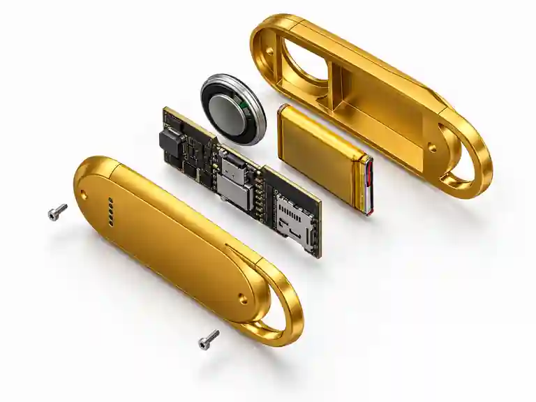
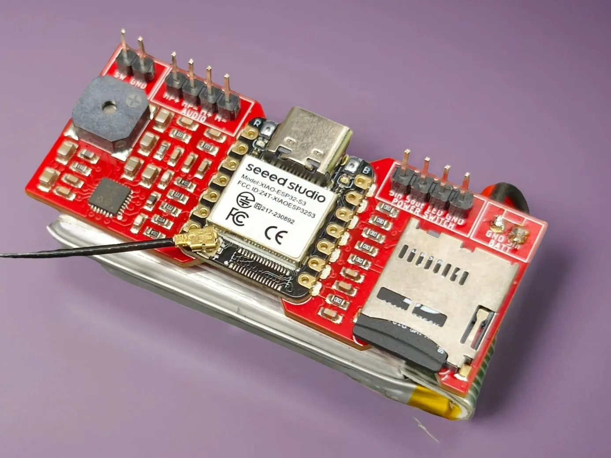
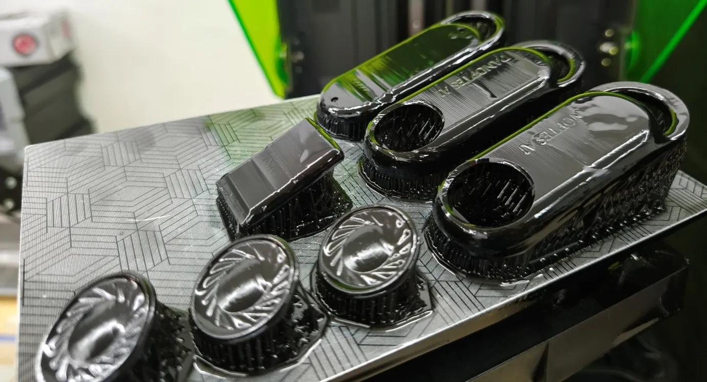
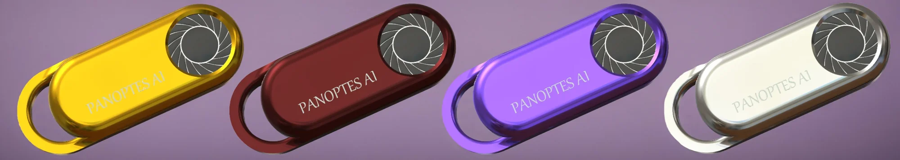

Explorer un assistant vocal miniature au format pendentif.
ESP32Bluetooth LEAudioImpression SLA

Rendu illustratif du projet.Le besoin
Explorer un assistant vocal miniature au format pendentif.
L’intervention
Développement électronique et intégration du microphone, du haut-parleur et de la batterie dans un boîtier compact.
Le résultat
Une preuve de concept fonctionnelle et une conception mécanique préparée pour la suite du développement.
Analyse du besoin
Objectif : concevoir un traducteur vocal ultra-réactif, sous forme de pendentif, connecté à ChatGPT via Bluetooth Low Energy (BLE). Le dispositif doit offrir une autonomie de deux jours, intégrer un haut-parleur suffisamment puissant, présenter un design simple et élégant, et ne pas dépasser un coût de production de 40 € en série de 100 unités.
C’était le défi ambitieux que posait le projet Panoptès AI, développé dans le cadre d’une preuve de concept à présenter lors d’appels à projets. L’objectif : obtenir des financements pour structurer une équipe autour de la vision du client (confidentielle à ce stade).
Parmi les principales difficultés : garantir une autonomie suffisante malgré l’échange vocal constant via BLE, assurer une connectivité fluide avec ChatGPT, respecter un budget restreint et réussir la miniaturisation pour une portabilité optimale.
Prototypage
La première phase de R&D s’est appuyée sur un ESP32, choisi pour son excellent rapport fonctionnalités/prix. En plus de gérer le BLE, sa connectivité Wi-Fi laisse envisager une future version autonome. Une carte électronique sur mesure a été développée, intégrant un module ESP32 XIAO. Ce choix a permis de limiter les coûts, de faciliter l’assemblage et de s’appuyer sur un module disposant d’une documentation technique pour préparer la suite du développement.

Optimisation du design
Le système de recharge, initialement prévu par induction, a été remplacé par un connecteur magnétique compact, plus économique, sans compromettre l’élégance du produit. Une conception 3D rapide, quelques vis, une batterie de 600 mAh, un haut-parleur, un microphone et un codec audio ont permis d’assembler un système pleinement fonctionnel.
Une fois le design validé, la version finale a été modélisée en 3D en vue d’une industrialisation. Une impression 3D en SLA a permis de valider l’intégration physique et l’encombrement, ouvrant la voie à une pré-série de validation.

Préindustrialisation
Le design final vise un aspect métallisé, tout en conservant un poids réduit, un coût bas et la transparence aux ondes Bluetooth. L’usinage métallique étant exclu, une impression 3D avec finition “vacuum electroplating” a été retenue. Cette technique garantit une bonne adhésion du revêtement à coût maîtrisé. Plusieurs rendus photoréalistes ont été proposés au client pour orienter les choix esthétiques.

Conclusion
Panoptès AI réunit tous les ingrédients d’un produit innovant : un design épuré, une technologie portable et connectée, un concept simple et un fort potentiel d’usage. Ce projet a permis de relever des défis à la fois électroniques, mécaniques et logiciels — un véritable challenge multidisciplinaire.
Cette preuve de concept réunit les éléments techniques nécessaires pour présenter le projet et préparer les prochaines étapes de son développement.
Merci à John pour sa confiance tout au long de cette aventure.
Un projet similaire ?
Parlons de votre besoin.
Une idée, une difficulté technique ou un prototype à faire évoluer.